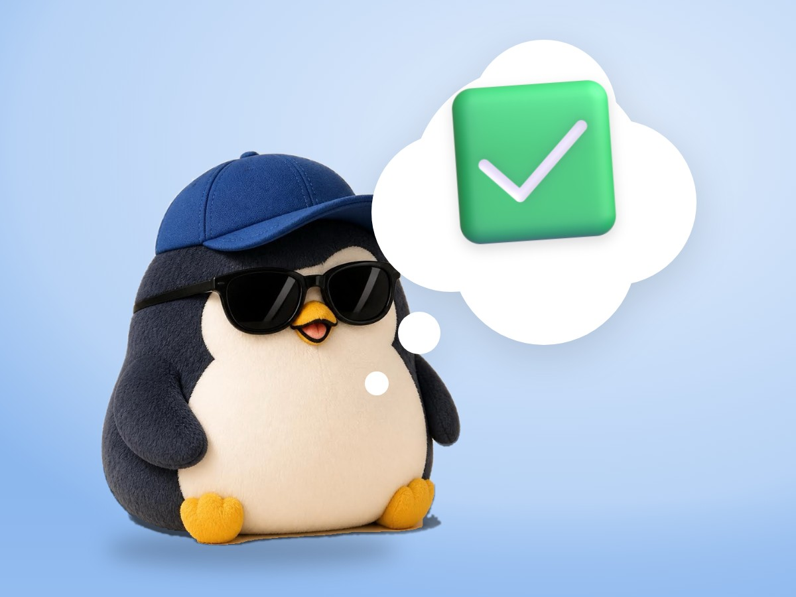

🧪 LAB · 試作 — AIが読書メモから一気に作った記事です。本番の一覧には出していません · 試作の一覧
🐧 EVERYDAY LIFE⚡ 43 SEC
On tired days, keep a done list instead of a to-do list 📒

Sound Familiar
With a to-do list, when you finish 1 thing, new things are added, and it hardly ends.
So every time you look at the list, you get tired: "There is still so much."
The Point
So on hard days, I suggest keeping a "done list."
You just write the things you did today, after you do them.
The Reason
You look at "what I did," not "what I could not do," so you feel a little easier.
⚡ TRY IT
My done list for today
📒 Done today0
- 🛏️ Got out of bed✅
- 💧 Drank water⭐
- 🪥 Brushed my teeth🐧
- 🍙 Ate something💮
- 🚿 Took a shower🌸
- 📖 Read this article🎖️
(empty… tap below)
Tap what you did today. Small things count.
📒 Nice! It is already a list.
🌟 Look at that. A real day.
🎉 6 things! What a day.
🍮 Fun things do not need a list. Just enjoy them!
For Example
For example, you can even write "I got up," "I drank water," or "I brushed my teeth."
When you write them, you notice you did more than you thought, even on a day you felt you did nothing.
Try This
Before bed, try writing just 3 things you did today.
In Short
On hard days, count the things you did.
📚 I wrote this from my reading notes.